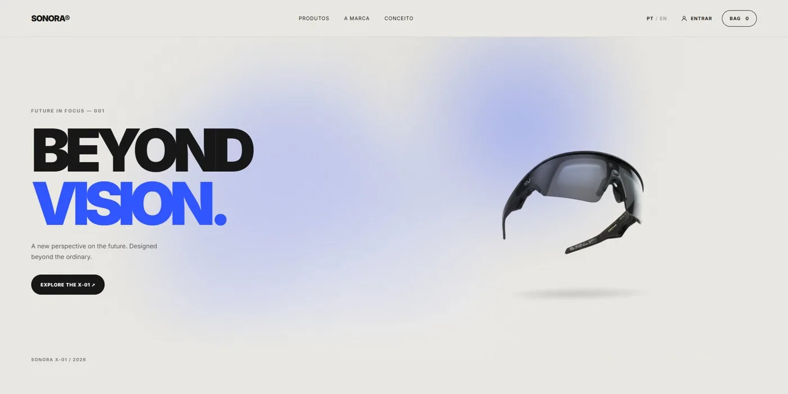
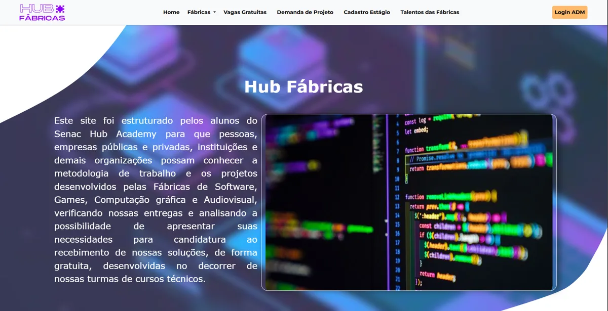

MINHA JORNADA
Sobre mim & minha jornada
Sou Hentony Almeida, desenvolvedor Full Stack em formação, com foco na criação de aplicações web que combinam funcionalidade, design e experiência do usuário.
Minha trajetória na programação começou em 2023, no Senac Hub Academy, em Campo Grande (MS). Após um período dedicado a explorar outras áreas e aprofundar meu interesse por design, retomei meus estudos em 2026 com foco no desenvolvimento de projetos próprios, no aprimoramento das minhas habilidades técnicas e na busca pela minha primeira oportunidade profissional como desenvolvedor.
Construindo minha jornada
- 2023
Desenvolvimento de Sistemas
Senac Hub Academy
Primeiro contato com a programação, em Campo Grande (MS). No mesmo ano, Python Essentials 1 e Cybersecurity Essentials pela Cisco.
Início da carreira
- 2024
Projeto Hub Fábricas
Senac Hub Academy
Conclusão do curso com a entrega do Hub Fábricas, sistema web em PHP e MySQL.
Projeto de conclusão
- 2023 – 2025
Redes de Computadores
Estácio
Tecnólogo concluído em 03/07/2025, com certificação intermediária em Administração de Redes.
Formação superior
- 2026
De volta, com foco total
Projetos próprios
Criação do SONORA e do ASTER e estudo de novas tecnologias, em busca de uma oportunidade na área.
Em andamento
Habilidades técnicas
As barras mostram meu nível atual de uso, não uma nota: o que já apliquei em projetos e o que ainda estou aprendendo.
Ferramentas e Tecnologia
- Git e GitHub
- PostgreSQL
- MySQL
- Express
- Vite
- Bootstrap
- Chart.js
- Stripe (teste)
Projetos.

Projeto em destaque · 2026
Loja virtual full stack de áudio, com catálogo, carrinho, checkout e painel administrativo, em português e inglês. Pagamento com Stripe em modo de teste; ainda não publicada.
Ver código no GitHub ↗Rede social · estudo
Rede social com feed, postagens, perfis e envio de avatar. Roda localmente e é um projeto de aprendizado.

Projeto de conclusão · 2024
Sistema web do curso de Desenvolvimento de Sistemas do Senac Hub Academy, com área administrativa, gráficos e PDF. Repositório privado.
FORMAÇÃO
Certificações e formação
- 01
Tecnólogo em Redes de Computadores
Estácio · concluído em 03/07/2025
- 02
Certificação intermediária em Administração de Redes
Estácio · 320 h · 04/07/2025
- 03
Python Essentials 1
Cisco Networking Academy, via Senac MS · 17/05/2023
- 04
Cybersecurity Essentials
Cisco Networking Academy · 02/10/2023
- 05
Computer Hardware Basics
Cisco Networking Academy · 26/04/2026
- 06
IT Customer Support Basics
Cisco Networking Academy · 26/04/2026
Vamos conversar.
Estou aberto a oportunidades como desenvolvedor Full Stack júnior. O melhor caminho é pelo LinkedIn ou pelo GitHub.